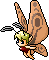
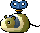

미스릴의 원석
기타드랍 몬스터 50종
이 아이템을 주는 몬스터 50종
확인 필요·미출시 표시가 있는 몬스터는 메이플랜드에서 이 아이템을 안 줄 수도 있어요.

페어리Lv.30 · 회피 25구름공원2
레츠 핼리오스탑2층Lv.36 · 회피 18핼리오스탑100층 팬더테니Lv.36 · 회피 16장난감공장<메인공정2>드랍 정보는 고전 메이플 서버 데이터(Cosmic, AGPL-3.0) 기준 참고용이고 일부는 메이플랜드 자료로 확인했어요. 드랍률은 넣지 않았어요.